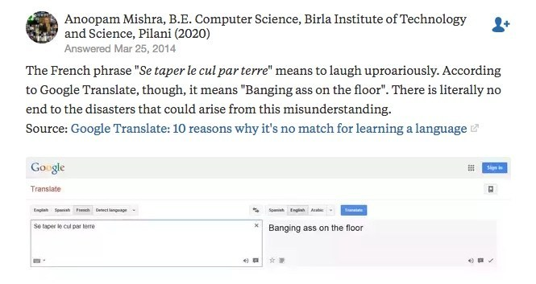

Google Translate
If I got five cents every time someone says to me "So you're a translator? Can't you just use Google Translate?", this would be me right now:
So how does it actually work? What kind of magic is there behind that programme that allows us to translate texts from Swahili into German and vice versa? How good is it?
What is Google Translate
Google Translate is a multilingual machine translation system developed and provided by Google. It translates text, voice, images or video in real time from one language to another. It has a web interface, as well as mobile interfaces for iOS and Android, and an API that developers can use to build browser extensions, applications, and other software. Google Translate can translate from 109 languages and it is used by more than 200 million people every day.
History
Launched in April 2006 as a statistical machine translation service, it used United Nations and European Parliament documents and transcripts to gather linguistic data. Instead of translating languages directly, it first translates text to English and then pivots to the target language in most of the language combinations. It looks for patterns in millions of documents to help decide on which words to choose and how to arrange them in the target language.
In November 2016, Google announced that Google Translate would switch to a neural machine translation engine - Google Neural Machine Translation (GNMT) - which translates "whole sentences at a time, rather than just piece by piece. It uses this broader context to help it figure out the most relevant translation, which it then rearranges and adjusts to be more like a human speaking with proper grammar". As of 2020, GNMT is used in all 109 languages in the Google Translate roster.
Neural machine translation
Neural machine translation (NMT) is an approach to machine translation that uses an artificial neural network to predict the likelihood of a sequence of words, typically modeling entire sentences in a single integrated model.
Technically, NMTs encompass all types of machine translation where an artificial neural network is used to predict a sequence of numbers when provided with a sequence of numbers. In the case of translation, each word in the input sentence (e.g English) is encoded as a number to be translated by the neural network into a resulting sequence of numbers representing the translated target sentence (e.g Chinese).
To give you a simplified example of an English to Chinese machine translation:
"I am a dog" is encoded into numbers 251, 3245, 953, 2.
The numbers 251, 3245, 953, 2 are input into a neural translation model and results in output 2241, 9242, 98, 6342.
2241, 9242, 98, 6342 is then decoded into the Chinese translation “我是只狗"
The above example then begs a further question 'How does the translation model work?' The simple answer is it is via a complex mathematical formula (represented as a neural network). As described earlier, this formula takes in a string of numbers as inputs and outputs a resulting string of numbers. The parameters of this neural network are created and refined via training the network with millions of sentence pairs (e.g English and Chinese sentence pair translations). Each sentence pair modifies the neural network slightly as it runs through each sentence pair using an algorithm called back-propagation. This results in a best-fit model most accurately translating any of the input numbers into outputs numbers from the millions of sentence pairs it was provided.
Problems with Google Translate
Although Google Translate has improved significantly since it was launched in 2006, especially for major language pairs, it is still far from perfect. Let's take a look at some of Google Translate's blunders.
"Do you want to translate this DNA sequence from Somali to English?" #googletranslatefail pic.twitter.com/3Lz59Ph7c1
— Zannah Salter (@Zannah_Du) April 25, 2017
When you want to compliment your Italian host's amazing meal - and find out that it is only used to refer to heroin. #GoogleTranslateFail pic.twitter.com/ZvgkWjHaPB
— Chris_in_Georgia (@Hello_MOTO2016) April 6, 2017
Regardless, if you still think Google Translate is a useful tool, why don't you try to build your own machine translation system?